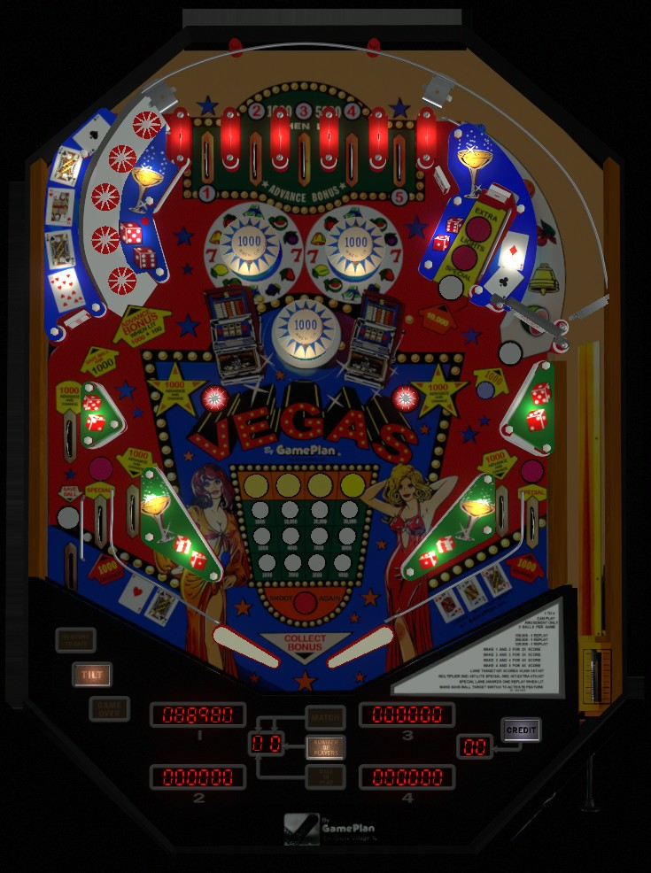

This is a cocktail pinball table, and is not to be confused with Vegas (Premier Gottlieb, 1990), which is a conventional pinball with an alphanumeric display.
Shoot to the top of the table as much as possible via the star rollover lane in the upper left and the spinner lane in the upper right. Bonus multipliers are earned at the top lanes: the more of 1-2-3-4-5 you complete in order, the higher the bonus multiplier. Earning a bonus multiplier also lights the spinner for 1,000 points per spin. The target near the left star rollover lane activates the kickback in the far left out lane for the rest of the ball. The dead-end lane in the upper right can spot bonus multipliers, light the out lane Special, and award an extra ball after successive hits.
The below picture of Vegas' playfield was taken from the VPX recreation by Itchigo et al.

Roll through an unlit top lane to light it. Unlit lanes score 1,000 points and a bonus advance. Lit lanes score 5,000 points, but no bonus advance. Lighting both 1 and 2 awards 2x bonus multiplier; 1-2-3- awards 3x; 1-2-3-4 awards 4x; 1-2-3-4-5 awards 5x bonus. If you have 1-2-4-5 and you go back and collect the 3, you will go straight from 2x bonus to 5x since the sequence is restored.
Each lit top lane also lights one of the star rollovers in the left orbit shot.
Bumpers score 100 points, or 1,000 when lit. All 3 bumpers are always unlit at the start of the ball. The standup target located just above-right of the bumpers scores 10 points and lights the upper left pop bumper. The left and right in lanes light the bottom and upper right bumpers respectively. Once a bumper is lit, it stays lit for the rest of the ball.
Each star rollover within this lane always awards 1 bonus advance. Lit star rollovers score 1,000 points, and unlit star rollovers score 100. Each lit top lane lights one star rollover, starting from the bottom.
Shots to the target at the end of this lane always score 10,000 points. Be careful, as the return feed from the dead-end target goes directly into the center drain quite often.
Scores 100 points per spin, or 1,000 per spin when lit. The spinner is lit whenever the bonus multiplier is at least 2x.
Vegas has a conventional in/out lane setup, but with 2 out lanes on the left instead of 1. The far left out lane and both in lanes score 1,000 points and a bonus advance, as well as changing where the Special is lit if it has been qualified. The near left out lane and right out lane score 1,000 points and a bonus advance. The standup target near the opening to the upper left star rollover lane qualifies an automatic kickback in the far left out lane for the rest of the ball. The ball can drain down the far left out lane while the kickback is lit if it goes down the lane at very high speed; there is no compensation for this.
Bonus is advanced by any in/out lane, any unlit top lane, and any star rollover. Max base bonus is 39,000 points. Bonus multipliers are awarded by lighting top lanes in 1-2-3-4-5 order as described at the beginning of the guide. Max bonus is 5x 39,000 = 195,000 points. Bonus cannot be collected mid-ball and neither base bonus nor bonus multiplier can be carried from ball to ball.